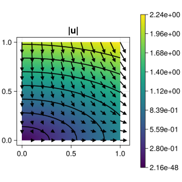

260 : Axisymmetric Stokes
This example solves the 3D stagnation point flow via the 2.5D axisymmetric formulation of the Navier–Stokes problem that seeks a velocity $\mathbf{u} = (u_z, u_r)$ and pressure $p$ such that
\[\begin{aligned} - \mu\left(\partial^2_r + r^{-1} \partial_r + \partial^2_z - r^{-2} \right) u_r + (u_r \partial_r + u_z \partial_z) u_r + \partial_r p & = \mathbf{f}_r\\ - \mu\left(\partial^2_r + r^{-1} \partial_r + \partial^2_z \right) u_z + (u_r \partial_r + u_z \partial_z) u_z + \partial_z p & = \mathbf{f}_z\\ (\partial_r + r^{-1})u_r + \partial_z u_z & = 0 \end{aligned}\]
with exterior force $\mathbf{f}$ and some viscosity parameter $\mu$.
The axisymmetric formulation assumes that the velocity in some 3D-domain, that is obtained by rotation of a 2D domain $\Omega$, only depends on the distance $r$ to the rotation axis and the $z$-coordinate tangential to the x-axis, but not on the angular coordinate of the cylindric coordinates. The implementation employs $r$-dependent bilinear forms and a Cartesian grid for the 2D $(z,r)$ domain that is assumed to be rotated around the $r=0$-axis.
This leads to the weak formulation
\[\begin{aligned} a(u,v) + b(p,v) & = (f,v) \\ b(q,u) & = 0 \end{aligned}\]
with the bilinear forms
\[\begin{aligned} a(u,v) := \int_{\Omega} \left( \nabla u : \nabla v + r^{-2} u_r v_r \right) r dr dz\\ b(q,v) := \int_{\Omega} q \left( \mathrm{div}(v) + r^{-1} u_r \right) r dr dz \end{aligned}\]
where the usual Cartesian differential operators can be used. The factor $2\pi$ from the integral over the rotation angle drops out on both sides.
The computed solution for the default parameters looks like this:

module Example260_AxisymmetricNavierStokesProblem
using ExtendableFEM
using ExtendableGrids
using SimplexGridFactory
using Triangulate
function kernel_convection!(result, input, qpinfo)
u, ∇u = view(input, 1:2), view(input, 3:6)
r = qpinfo.x[1]
result[1] = r*(∇u[1]*u[1] + ∇u[2]*u[2])
result[2] = r*(∇u[3]*u[1] + ∇u[4]*u[2])
return nothing
end
function kernel_stokes_axisymmetric!(result, u_ops, qpinfo)
u, ∇u, p = view(u_ops,1:2), view(u_ops,3:6), view(u_ops, 7)
r = qpinfo.x[1]
μ = qpinfo.params[1]
# add Laplacian
result[1] = μ/r * u[1] - p[1]
result[2] = 0
result[3] = μ*r * ∇u[1] - r*p[1]
result[4] = μ*r * ∇u[2]
result[5] = μ*r * ∇u[3]
result[6] = μ*r * ∇u[4] - r*p[1]
result[7] = -(r*(∇u[1]+∇u[4]) + u[1])
return nothing
end
function u!(result, qpinfo)
x = qpinfo.x
result[1] = x[1]
result[2] = -2*x[2]
end
function kernel_l2div(result, u_ops, qpinfo)
u, divu = view(u_ops,1:2), view(u_ops,3)
result[1] = (qpinfo.x[1]*divu[1] + u[1])^2
end
function main(; μ = 0.1, nrefs = 4, nonlinear = false, uniform = false, Plotter = nothing, kwargs...)
# problem description
PD = ProblemDescription()
u = Unknown("u"; name = "velocity")
p = Unknown("p"; name = "pressure")
assign_unknown!(PD, u)
assign_unknown!(PD, p)
assign_operator!(PD, BilinearOperator(kernel_stokes_axisymmetric!, [id(u),grad(u),id(p)]; params = [μ], kwargs...))#; jacobian = kernel_jacobian!))
if nonlinear
assign_operator!(PD, NonlinearOperator(kernel_convection!, [id(u)], [id(u),grad(u)]; bonus_quadorder = 1, kwargs...))#; jacobian = kernel_jacobian!))
end
assign_operator!(PD, InterpolateBoundaryData(u, u!; regions = [3]))
assign_operator!(PD, HomogeneousBoundaryData(u; regions = [4], mask = (1,0,1)))
assign_operator!(PD, HomogeneousBoundaryData(u; regions = [1], mask = (0,1,1)))
# grid
if uniform
xgrid = uniform_refine(grid_unitsquare(Triangle2D), nrefs)
else
xgrid = simplexgrid(Triangulate;
points=[0 0 ; 5 0 ; 5 1 ; 0 1]',
bfaces=[1 2 ; 2 3 ; 3 4 ; 4 1 ]',
bfaceregions=[1, 2, 3, 4],
regionpoints=[0.5 0.5;]',
regionnumbers=[1],
regionvolumes=[4.0^(-nrefs-1)])
end
# solve
FES = [FESpace{H1P2B{2,2}}(xgrid), FESpace{L2P1{1}}(xgrid)]
sol = ExtendableFEM.solve(PD, FES; kwargs...)
# compute divergence in cylindrical coordinates by volume integrals
DivIntegrator = ItemIntegrator(kernel_l2div, [id(u), div(u)]; quadorder = 4, resultdim = 1)
div_error = sqrt(sum(evaluate(DivIntegrator, sol)))
@info "||div(u_h)|| = $div_error"
# compute L2error
function kernel_l2error(result, u_ops, qpinfo)
u!(result, qpinfo)
result .= (result - u_ops).^2
end
ErrorIntegratorExact = ItemIntegrator(kernel_l2error, [id(1)]; entities = ON_BFACES, regions = [3], quadorder = 4, kwargs...)
error = evaluate(ErrorIntegratorExact, sol)
L2error = sqrt(sum(view(error,1,:)) + sum(view(error,2,:)))
@info "||u - u_h|| = $L2error"
# plot
plt = plot([id(u)], sol; Plotter = Plotter)
return [div_error, L2error], plt
end
end # moduleThis page was generated using Literate.jl.